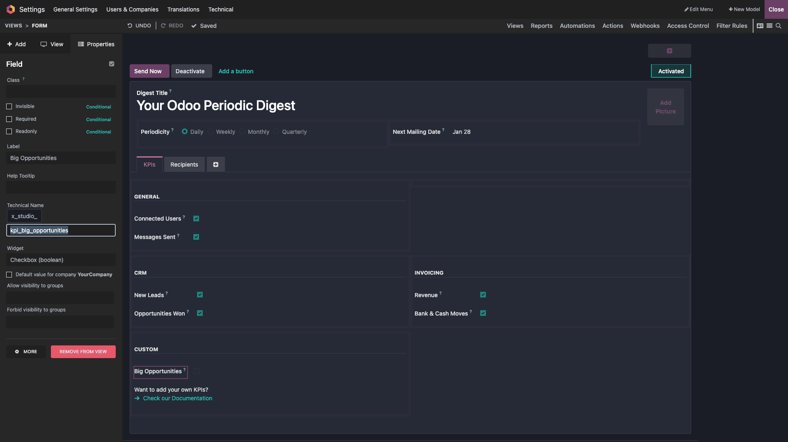

Terkadang KPI standar tidak cukup. Anda dapat menambahkan KPI sendiri namun membutuhkan modul Odoo Studio.
Syarat Field:
Untuk membuat KPI baru, Anda perlu menyiapkan dua jenis field pada model Digest:
- Checkbox Field: Untuk opsi enable/disable KPI tersebut.
- Integer/Float Field: Untuk menyimpan nilai hasil perhitungan KPI (computed field).

📸 Screenshot: Tampilan menambahkan field baru di Odoo Studio